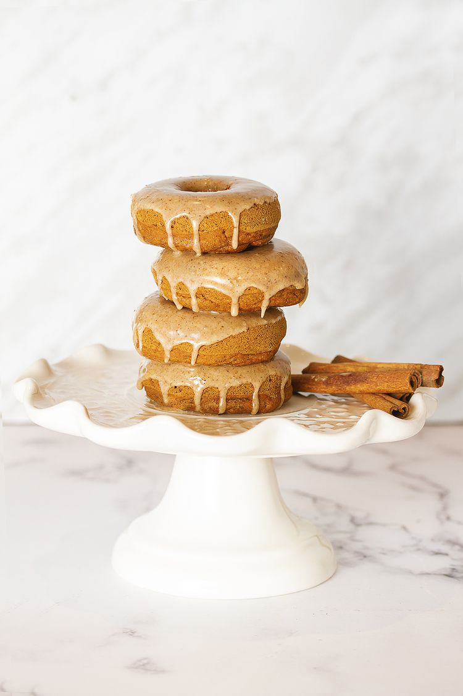

Home
Baked Vegan Doughnuts

Source: Loving It Vegan
Description
The best vegan donuts! Light and fluffy and SO easy to make. Serve them covered in chocolate and sprinkles or topped with cinnamon sugar!
Ingredients
- 1 ½ cups All Purpose Flour (188g)
- ¾ cup White Granulated Sugar (150g)
- 2 teaspoons Baking Powder
- ¼ teaspoon Salt
- ½ teaspoon Cinnamon
- ¼ teaspoon Nutmeg
- ¾ cup Soy Milk (180ml) or other non-dairy milk
- 1 teaspoon Vanilla Extract
- 2 Tablespoons Applesauce
- 5 Tablespoons Vegan Butter Melted
For Chocolate Topping:
- 1 cup Vegan Chocolate Chips (175g)
- Sprinkles
For Cinnamon Sugar Topping:
- 2 Tablespoons Vegan Butter Melted
- ½ cup White Granulated Sugar (50g)
- 1 teaspoon Cinnamon
Directions
- Preheat the oven to 350°F (180°C). Prepare two donut trays by spraying with non-stick spray. Set aside.
- Sift the flour into a mixing bowl and add the sugar, baking powder, salt, cinnamon and nutmeg. Mix together.
- Add the soy milk, vanilla, applesauce and melted vegan butter and whisk in, removing any large lumps.
- Place the donut batter into a piping bag and pipe it into the donut partitions evenly or use a spoon (but it can get messy).
- Bake for 15 minutes until lightly browned on top.
- Remove from the oven and let cool for a few minutes before transferring the donuts to a wire cooling rack.
- Allow to cool completely before doing the topping.
- For the chocolate topping, melt the chocolate by placing it in a microwave safe bowl and heating in 30 second intervals, bringing it out to stir every 30 seconds until completely melted. Dip the donuts into the melted chocolate and then place onto a parchment lined baking tray and use a teaspoon to add the sprinkles. When all the donuts are done, move the tray into the fridge briefly for the chocolate topping to set.
- For the cinnamon sugar topping, add the sugar and cinnamon to a bowl and mix together. Melt the vegan butter and use a brush to brush the butter onto the top of a donut and then immediately dip it into the bowl of cinnamon sugar. Place the donut onto a parchment lined tray and use a teaspoon to add more cinnamon sugar to the top of the donut. Repeat for all the donuts.
Notes
- Weigh your flour for the most accurate results or use the spoon and level method: spoon the flour into your measuring jug and then level off the top with a knife.
- The melted vegan butter for the donut batter can be replaced with melted coconut oil.
- Each topping (Chocolate or Cinnamon Sugar) is enough for a full batch of 12 donuts. If you want to do half/half then reduce the quantities for the toppings.